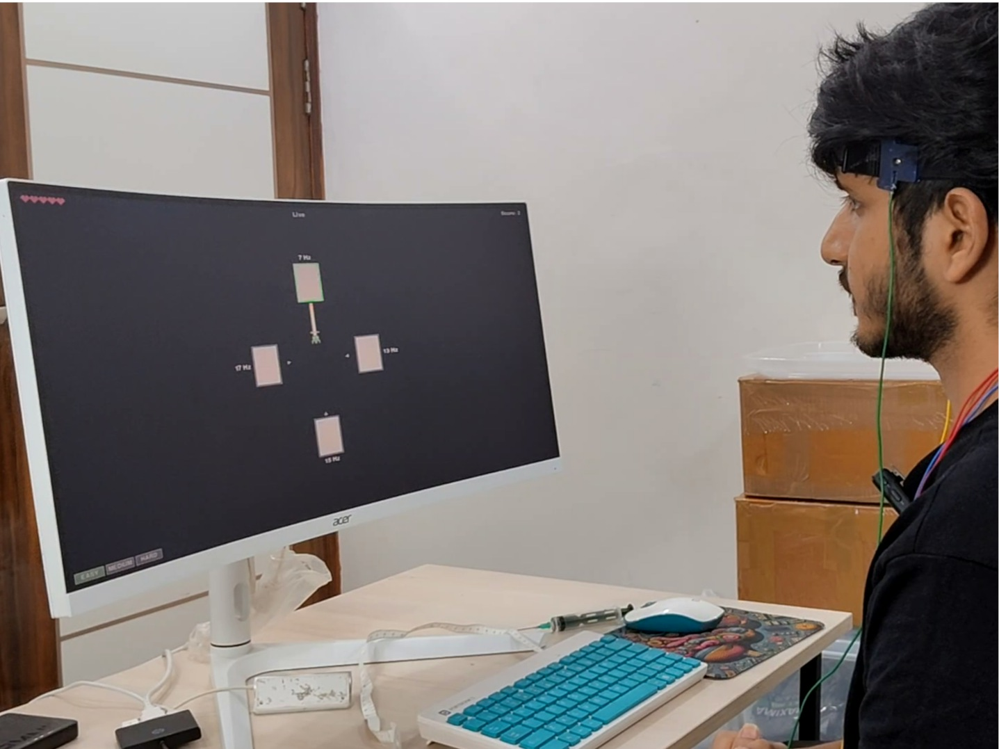

SSVEP using NPG Lite#
Overview#
NeuroGaze is a brain-controlled interface that lets you play a game by simply looking at flickering targets on screen. It relies on the steady-state visually evoked potential (SSVEP): when you look at something flickering at a fixed rate, your visual cortex responds at that same rate, and this response can be picked up from the back of the head with EEG electrodes.
Four squares flicker on screen at 7, 13, 15 and 17 Hz. NPG Lite streams the EEG over Bluetooth, and a Filter-Bank Canonical Correlation Analysis (FBCCA) decoder works out which frequency the signal matches most strongly, telling it which square is being looked at, in real time.

NeuroGaze: an SSVEP brain-controlled interface built with NPG Lite#
Hardware Used#
Neuro PlayGround Lite, 3-6 channel
EEG cap or headband with contacts for 3 channels plus reference and ground
A monitor with a 120 Hz or higher refresh rate, so the flicker stays clean
Electrodes#
NPG Lite Channel |
Placement |
|---|---|
Channel 1 |
O1 (back of the head, left) |
Channel 2 |
Oz (back of the head, middle) |
Channel 3 |
O2 (back of the head, right) |
Reference / Ground |
Behind the ears |
Note
Ideas we’re planning to explore next with this setup:
An SSVEP-based virtual keyboard for typing by gaze
More SSVEP-controlled games beyond the current one
Swapping the on-screen flicker for physical flickering LEDs